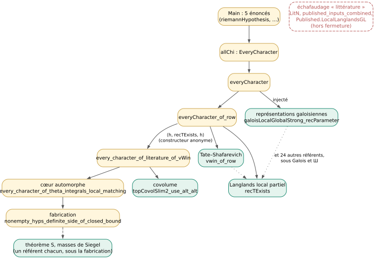
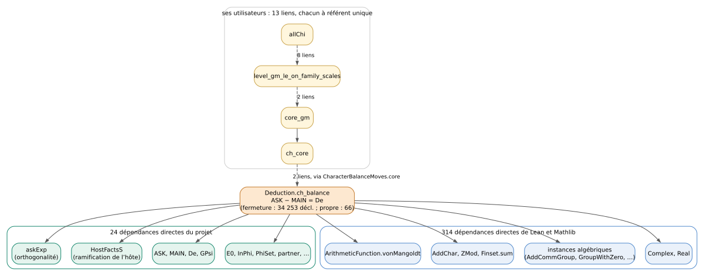
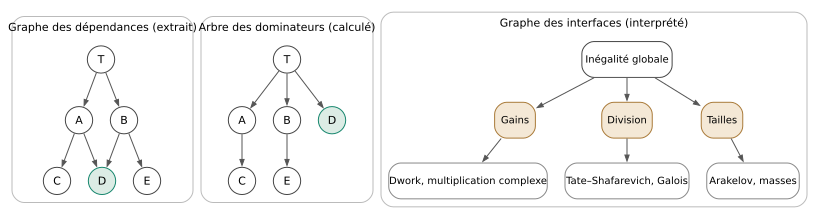
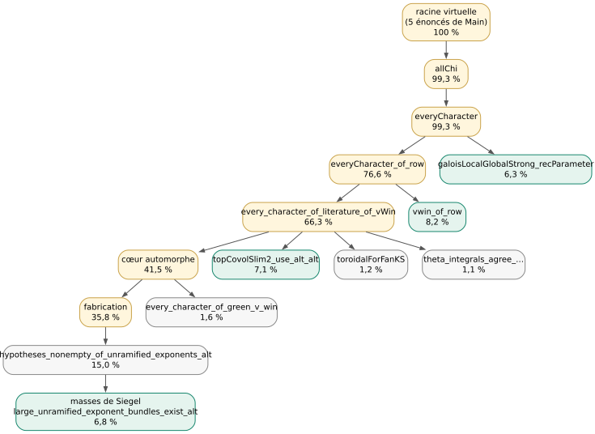
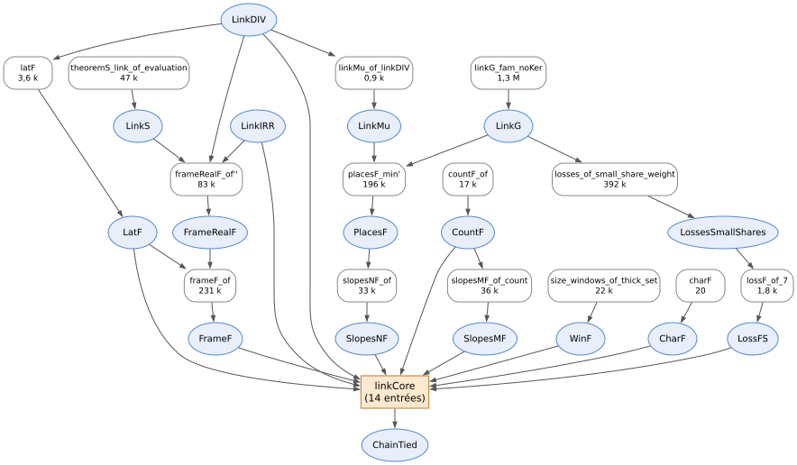
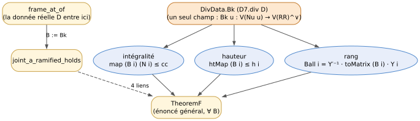
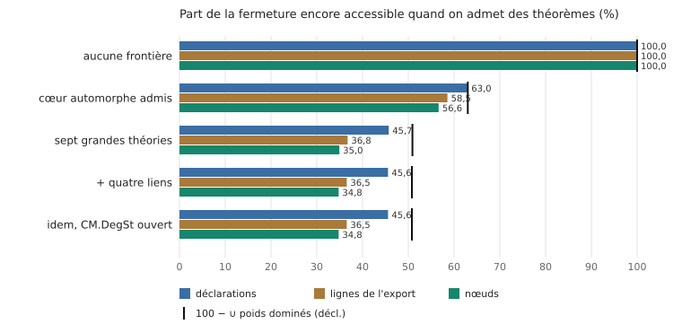
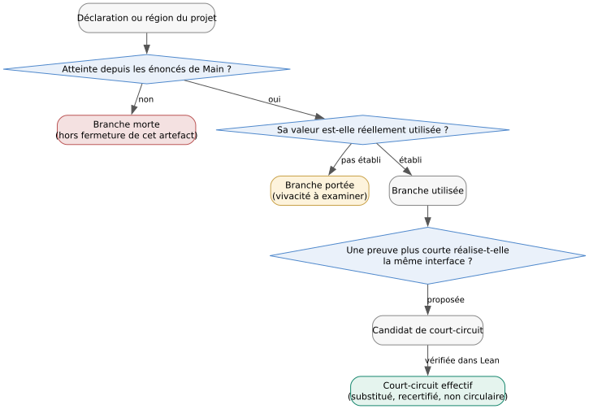
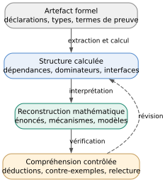

Descendre le graphe : comment lire une preuve formelle
de dix-sept millions de lignes
Le cas de la preuve d’Alpöge de l’hypothèse de
Riemann généralisée
Gérard Rozsavolgyi, avec Claude (Anthropic)
Relecture : ChatGPT (OpenAI)
Article de méthode, version 1.3, 26 novembre 2026
Résumé
En novembre 2026, L. Alpöge a publié une preuve formelle, en Lean, de
l’hypothèse de Riemann généralisée pour les fonctions L de Dirichlet :
17,4 millions de lignes de source, 1 468 414 déclarations dans la
fermeture de ses énoncés, rejouées par plusieurs noyaux indépendants. Sa
validité n’est pas en cause ; sa compréhension l’est. Nous demandons ce
que l’on peut comprendre d’une preuve formelle produite avec l’aide d’un
agent d’IA, à une échelle qui excède la lecture humaine ordinaire, et
comment le mesurer.
La méthode combine quatre graphes : le graphe des dépendances,
extrait de l’export ; l’arbre des dominateurs, qui attribue à chaque
nœud un volume exclusif ; un graphe des interfaces entre composantes,
extrait des types puis interprété ; et le graphe des applications
instanciées, qui suit les objets à travers les termes de preuve. Trois
résultats en sortent. Des frontières de lecture
collectives : admettre sept grandes composantes masque environ 76 000
déclarations de plus que l’union de leurs sous-arbres dominés, et la
fermeture encore accessible compte 45,7 % des déclarations. La
provenance des arguments : le graphe des applications
identifie une même donnée d’accouplement (DivData.Bk) au
point où intégralité, hauteur et rang sont requis, et rattache les onze
hypothèses du théorème de comptabilité de la preuve à leurs interfaces.
Une analyse des clauses inertes : 5 729 théorèmes
livrent au moins une conclusion qu’aucun consommateur ne lit. Selon
notre sélection de composantes, le mécanisme propre pèse moins de 0,5 %
de la fermeture, en volume exclusif. Une échelle de validation dit, nœud
par nœud, ce qui est lu, interprété ou reconstruit ; trois études de cas
montrent comment le graphe réfute une lecture, ou comment un
contre-exemple oriente sa lecture. Nous distinguons enfin branches
mortes, portées et remplaçables, et nous comparons la preuve à sa
réécriture courte. Le contenu mathématique est exposé dans un texte
compagnon.
English version: translation of version 1.3 in preparation. Texte
compagnon, consacré au contenu mathématique : synthèse. Outils : tools/.
Le rôle de chacun est précisé dans la déclaration d’usage de l’IA, en
fin d’article.
Statut des énoncés. La validité formelle n’est pas
en cause : compilation complète, axiomes standard (propext,
Classical.choice, Quot.sound), rejeu par
plusieurs noyaux indépendants (Sutherland [Su], Rubinstein [R], état au
23/11/2026). Ce texte cherche à comprendre. On y
distingue trois statuts :
les énoncés de l’export, cités par leur nom Lean
(ainsi) et lus avec les outils de tools/ ; ils sont parfois transcrits en notation
mathématique, en abrégeant les arguments implicites ;
les mesures, calculées sur le graphe extrait, avec
leurs conventions ;
les interprétations, marquées ⟦I⟧.
1.
Introduction : lire une preuve qu’on ne peut pas lire
Depuis Riemann, on sait que les nombres premiers sont gouvernés par
les zéros de la fonction ζ. L’hypothèse de Riemann fixe à \(\tfrac12\) l’exposant de ces oscillations :
le terme d’erreur du théorème des nombres premiers est \(O(x^{1/2+\varepsilon})\), et aucun exposant
plus petit n’est possible. En novembre 2026, L. Alpöge a annoncé une
preuve de cette hypothèse, étendue aux fonctions L de Dirichlet, sous la
forme d’un développement Lean de dix-sept millions de lignes, produit
avec un agent d’IA et accompagné d’une note de quelques pages [A]. En
quelques jours, la communauté l’a recompilé, a vérifié que seuls les
trois axiomes standard sont utilisés, et l’a rejoué dans plusieurs
noyaux indépendants [Su, R, Li].
Ces vérifications établissent la validité. Elles ne disent rien de la
compréhension, qui progresse depuis par des lectures partielles et des
réécritures (§ 9.3). Comme le note Lipponen [Li], une recompilation «
n’établirait pas que quelqu’un comprend l’argument ». Une preuve
formelle de cette taille ne se lit pas ligne à ligne ; elle n’a pas été
écrite pour être lue. Elle se laisse pourtant interroger, à condition de
la regarder comme ce qu’elle est : un graphe. Chaque
déclaration, définition ou théorème, dépend d’autres déclarations, par
son énoncé et par sa preuve. Le théorème final est une racine, et l’on
peut calculer exactement tout ce dont il dépend.
La question de cet article est donc méthodologique : que
peut-on comprendre d’une preuve formelle produite avec l’aide d’un agent
d’IA, à une échelle qui excède la lecture humaine ordinaire, et comment
mesurer ce que l’on a compris ? Notre réponse est qu’un graphe
de dépendances devient un instrument de lecture si l’on sépare
soigneusement ce qui s’y calcule (des fermetures, des
dominateurs, des volumes, des frontières) de ce qui s’y
interprète (le sens mathématique d’une interface, le
rôle d’un nœud). La preuve d’Alpöge sert d’étude de cas. Son contenu
mathématique est exposé dans un texte compagnon, la synthèse, organisée par questions ; nous y
renvoyons pour tous les calculs et modèles.
Contributions.
L’arbre des dominateurs comme outil de lecture. Il
attribue à chaque nœud un volume exclusif, mesuré selon trois
pondérations, et localise le mécanisme : moins de 0,5 % de la fermeture
(§§ 3–4).
Un graphe des interfaces, extrait automatiquement
des types des prédicats de contrat de la preuve, puis regroupé et
traduit à la main. Il montre comment les grandes composantes
communiquent (§§ 3, 5).
Des frontières de lecture. Nous définissons la zone
qui reste accessible quand on admet des théorèmes, en gardant leurs
énoncés, et nous la mesurons. L’abstraction simultanée de plusieurs
composantes masque un volume que les poids individuels ne voient pas, et
ce qui reste est l’infrastructure des objets (§ 6).
Une échelle de validation, qui dit, nœud par nœud,
ce qui est lu, interprété ou reconstruit, et une étude de cas où le
graphe, joint à un contre-exemple, réfute une lecture (§ 7).
Une taxonomie des branches non exploitées, mortes,
portées ou remplaçables, avec les critères qui permettent de les établir
(§ 8).
Un graphe des applications instanciées, extrait des
termes de preuve, qui dit à quels objets les théorèmes sont appliqués et
d’où viennent leurs arguments. Il permet de vérifier des raccords que la
lecture des énoncés laisse ouverts (§§ 3.4, 5).
Le § 2 présente l’objet en deux pages. Le § 3 décrit les graphes, le
§ 4 les mesures. Le § 5 parcourt la preuve en huit arrêts. Les §§ 6 à 8
présentent les résultats méthodologiques, et le § 9 discute leurs
limites. L’annexe dit comment tout reproduire.
2. L’objet en deux pages
2.1 L’énoncé
Le module Main contient cinq énoncés :
riemannHypothesis, de type RiemannHypothesis
(la définition de Mathlib), et quatre énoncés sur les fonctions L de
Dirichlet. Tous descendent d’un seul nœud :
allChi : EveryCharacter
EveryCharacter := ∀ N [NeZero N] (χ : DirichletCharacter ℂ N) (s : ℂ),
1/2 < re s → (χ ≠ 1 ∨ s ≠ 1) → LFunction χ s ≠ 0
Pour tout caractère de Dirichlet χ et tout \(s\) de partie réelle \(>\tfrac12\), \(L(\chi,s)\ne0\), hors du pôle \(s=1\) du caractère principal.
LFunction et DirichletCharacter sont celles de
Mathlib : l’énoncé ne dépend d’aucune définition du projet, ce qui le
rend vérifiable indépendamment du reste. Le théorème couvre donc GRH
pour les fonctions L de Dirichlet, RH, et RH pour les fonctions zêta de
Dedekind des corps abéliens ; il ne couvre ni les corps non abéliens, ni
les fonctions L automorphes générales.
2.2 L’argument en un paragraphe
Une analyse classique ramène GRH à une majoration
unilatérale : une somme de \(\log
p\) à coefficients positifs, lissée par le poids de Riesz et dont
on a retranché le terme principal, doit être au plus \(x^{1/2+O(\varepsilon)}\) sur une suite de
fenêtres d’échelles (Landau en fenêtres ; synthèse, § 1). Pour majorer
une somme de premiers, la preuve suit Tchebychev : un objet arithmétique
très divisible, dont la taille se calcule sans les premiers, fournit par
la formule du produit une inégalité « premiers ≤ taille » (synthèse, §
2). L’objet est un réseau de périodes de formes automorphes. La
divisibilité vient de dérivées de séries thêta en des points à
multiplication complexe, qui garantissent, en chaque premier inerte, une
valuation \(a\,p/(p^2-1)-O(\log a)\)
(le Théorème A ; synthèse, § 3). Produire ces gains ne suffit pas : il
faut encore les répartir sur assez de directions et les préserver le
long des orbites de Frobenius (synthèse, §§ 3.5 et 7). Comme chez
Stepanov pour les courbes sur les corps finis, ces couches de
divisibilité s’empilent, ici le long d’une chaîne de \(m\approx\sqrt x\) relèvements thêta dont
les valuations s’additionnent (synthèse, § 4). La divisibilité devient
une montée de pente d’un réseau, que plafonne une inégalité de pentes de
Bost ; les tailles archimédiennes sont calculées
(Stirling, une formule de Chowla–Selberg démontrée dans le projet, des
masses de Siegel, une quasi-orthogonalité) : identités pour certaines,
bornes à erreur contrôlée pour d’autres. Le terme principal se compense
alors dans un théorème de comptabilité (synthèse, §§ 5 et 6.2). Il reste
une erreur de la forme \(x/m+m\),
minimale en \(m\asymp\sqrt x\) : d’où
l’exposant ½ (synthèse, § 6). Les grandes théories du projet servent à
rendre la division des réseaux possible et les objets constructibles
(synthèse, § 7).
2.3 Une architecture
« abstraite puis instanciée »
Ce qui rend la lecture possible est une propriété d’architecture.
Sous allChi, on rencontre une suite de théorèmes de la
forme « hypothèses ⇒ EveryCharacter » :
Le dernier, le cœur automorphe, domine 41,5 % de la
fermeture. Le mécanisme y est écrit sous hypothèses, et les grandes
théories sont injectées tout en haut comme arguments. L’index inverse le
confirme : chacune n’a qu’un seul référent direct.
Théorie
Nœud
Référents directs
Consommateur
Tate–Shafarevich
vwin_of_row
1
everyCharacter_of_row
Représentations galoisiennes
galoisLocalGlobalStrong_recParameter
1
everyCharacter
Covolume
topCovolSlim2_use_alt_alt
1
every_character_of_literature_of_vWin
Théorème S
CarrierGap.offDiag
1
LocalRows.at_choice_alt
Masses de Siegel
large_unramified_exponent_bundles_exist_alt
1
hypotheses_nonempty_of_unramified_exponents_alt
Langlands local
recTExists
25
galoisien, borne de Ш…
La correspondance de Langlands locale, partielle (démontrée en
profondeur zéro, arbitraire ailleurs), fait exception : elle est
interrogée directement en 25 points. Cette structure explique pourquoi
le mécanisme est léger dans l’arbre des dominateurs, et pourquoi on peut
le lire sans lire les théories.

Le sommet du graphe de la preuve. Les
flèches sont des dépendances directes, d’un énoncé vers ce dont il
dépend. En jaune, la chaîne principale ; en vert, les grandes théories,
chacune injectée par un unique référent ; en pointillés, les 24 autres
référents de recTExists ; en tirets rouges, l’échafaudage «
littérature », hors de la fermeture (§ 5.1).
3. Quatre graphes
La méthode distingue quatre graphes de nature différente : le premier
est extrait, le deuxième est calculé,
le troisième est interprété, le quatrième suit
les objets dans les termes de preuve.
3.1 Le graphe des dépendances
Ses sommets sont les déclarations de l’export. Une arête va de \(d\) à \(c\) si la constante \(c\) apparaît dans le type
ou dans la valeur de \(d\) : énoncé, corps de définition ou terme
de preuve. Les constructeurs, récurseurs et projections d’un inductif
sont rattachés à leur inductif. Le graphe est extrait en une passe sur
l’export NDJSON publié par Sutherland [Su] (62 Go décompressés), lu en
flux sans être décompressé sur disque, par un programme C
(deps.c) qui persiste le DAG des expressions.
Deux propriétés de ce graphe commandent toute la suite. Il
sur-approxime l’usage : une constante citée dans un
terme de preuve compte comme dépendance, même si son rôle est
accessoire. Et il est exact sur ce qu’il affirme : une
absence de dépendance, établie sur l’export, vaut pour cet artefact et
cette convention, alors qu’une recherche textuelle dans le source la
manque facilement (§ 5.1).
Un exemple réel. Le théorème
Deduction.ch_balance, dont l’énoncé tient en une ligne
(\(\mathrm{ASK}-\mathrm{MAIN}=\mathrm{De}\), §
5.3), dépend directement de 338 constantes : 24 du projet, et 314 de
Lean et de Mathlib, en grande partie des structures et des instances
algébriques. Sa fermeture compte 34 253 déclarations, dont 66 seulement
lui appartiennent en propre. Vers le haut, il n’a qu’un utilisateur, qui
n’en a qu’un, et ainsi de suite : treize liens à référent unique le
relient à allChi. C’est, à l’échelle d’un seul nœud, la
signature de l’architecture « abstraite puis instanciée » du § 2.3.

Un extrait réel du graphe des
dépendances, autour de ch_balance. En bas, ses 338
dépendances directes, regroupées ; en haut, la chaîne de ses
utilisateurs jusqu’à allChi, dont chaque maillon n’a qu’un
référent (les tirets abrègent plusieurs liens). Sorties de
query.py deps, query.py cl et
revindex.py up.
3.2 L’arbre des dominateurs
Fixons une racine \(r\). Un sommet
\(u\)domine\(v\) si tout chemin dirigé de \(r\) à \(v\) passe par \(u\). Les dominateurs de \(v\) forment une chaîne ; le plus proche est
son dominateur immédiat, et ces liens forment un arbre,
calculé ici par l’algorithme de Cooper, Harvey et Kennedy [CHK]. Le
poids dominé de \(u\)
est le poids de son sous-arbre : ce qui disparaîtrait de la fermeture si
l’on retirait \(u\). Nous prenons pour
racine un sommet virtuel relié aux cinq énoncés de
Main.

Les trois graphes. À gauche, un graphe de
dépendances (les flèches vont d’un énoncé vers ce dont il dépend) ; au
centre, son arbre des dominateurs ; à droite, un schéma d’interfaces,
qui n’est pas un sous-graphe extrait de Lean. Le nœud D, partagé par A
et B, est rattaché à T.
L’arbre n’est pas un arbre couvrant du graphe : une arête de l’arbre
n’est pas nécessairement une dépendance directe. Sur l’exemple de la
figure, A domine C et B domine E, mais ni A ni B ne domine D, qui est
partagé. D’où quatre précautions de lecture :
un théorème central partagé par plusieurs branches a un poids dominé
faible, car il est rattaché plus haut ;
une longue formalisation peut être conceptuellement simple, et une
déclaration très courte peut porter l’idée décisive ;
deux sous-arbres sont emboîtés ou disjoints : on additionne des
poids disjoints, jamais des poids emboîtés ;
une dépendance ne dit rien, à elle seule, de la fonction d’un nœud
dans le raisonnement.
Sur la preuve réelle. La figure suivante montre le
haut de l’arbre des dominateurs. On y lit l’épine
dorsale : chaque nœud de la chaîne principale domine la suite,
du cœur automorphe (41,5 %) à la fabrication (35,8 %), puis, sous elle,
à la construction qui livre les masses de Siegel (6,8 %). Les grandes
théories apparaissent comme des frères de l’épine, chacune avec son
volume exclusif. La correspondance de Langlands locale n’y figure pas :
partagée par 25 référents, elle est rattachée au-dessus d’eux, et son
poids dominé n’est que de 0,05 % (première précaution). Comparé au
schéma du sommet (§ 2.3), l’arbre ne garde qu’une arête par nœud, et ce
n’est pas toujours une dépendance directe.

Le haut de l’arbre des dominateurs réel.
Une arête relie un nœud à son dominateur immédiat ; le pourcentage est
le poids dominé, en lignes de l’export
(analysis/decl_spine.txt). En jaune, l’épine dorsale ; en
vert, les grandes théories. Les sous-arbres sont emboîtés : le poids
d’un parent contient ceux de ses enfants.
3.3 Le graphe des interfaces
La preuve contient un module, Formalism.MainNotions, qui
définit 207 prédicats à valeur dans Prop
(LinkG_at, LinkDIV_at, LinkN,
Count_at, ChainTied…). Ils servent de
contrats entre les grandes composantes. Pour chaque
théorème de l’export, interfaces.py relève automatiquement,
dans son type, les prédicats qu’il prend en hypothèse et ceux qu’il
conclut : on obtient 390 arêtes. organes.py dit ensuite,
par l’index inverse, quels producteurs d’interfaces chaque composante
utilise transitivement, et où chaque grande théorie est consommée.
Trois étapes restent humaines : le choix de la
famille de prédicats (par défaut, ceux de MainNotions) ; le
regroupement des théorèmes en composantes nommées (« hôte », « division
»…) ; et surtout la lecture de chaque énoncé, sa traduction mathématique
et l’explication de son rôle. Ce troisième graphe n’est pas fourni par
Lean.
Un extrait réel. La figure suivante montre le
voisinage de linkCore dans ce graphe, tel que
interfaces.py l’extrait. On le lit comme un graphe biparti
: les ellipses sont des interfaces, les boîtes des théorèmes qui en
consomment certaines et en produisent d’autres. linkCore
est un nœud d’inférence à quatorze entrées. On y voit
par exemple que la quasi-orthogonalité (LinkS) n’atteint
l’inégalité de pentes (FrameF) qu’à travers
frameRealF_of'', qui demande aussi la division
(LinkDIV) et l’irréductibilité (LinkIRR), et
que les gains (LinkG) alimentent deux interfaces
distinctes, la majoration des premiers (LossFS) et la
montée de pente (SlopesNF). Le graphe complet, avec les
organes et les plaques tournantes, est au § 5.4.

Le voisinage de linkCore
dans le graphe des interfaces, extrait de
analysis/interfaces.tsv. Ellipses : interfaces (prédicats
de MainNotions) ; boîtes : théorèmes qui consomment et
produisent des interfaces, avec leur poids dominé en lignes. Quatre
entrées de linkCore (NodesF,
ChosenTT, ChosenQD, ChosenThin)
et quelques entrées secondaires des théorèmes sont omises.
Objet
Mode d’obtention
Ce qu’il apporte
Graphe des dépendances
extraction (deps.c)
les constantes que chaque déclaration référence
Arbre des dominateurs
calcul (analyse_export.py)
un volume exclusif par nœud
Graphe des interfaces
extraction des prédicats (interfaces.py,
organes.py), puis lecture humaine
la nature des informations échangées entre composantes
Graphe des applications instanciées (§ 3.4)
extraction dans les termes de preuve (trace_app.py),
sans vérification de convertibilité
les objets auxquels les théorèmes sont appliqués, et la provenance
de leurs arguments
3.4 Le graphe des
applications instanciées
Les trois graphes précédents disent quels résultats interviennent, et
quelles propriétés passent d’une composante à l’autre. Ils ne disent pas
à quoi les théorèmes sont appliqués. Prenons trois
théorèmes \(T_1:\forall x,\,A(x)\Rightarrow
B(x)\), \(T_2:\forall
x,\,B(x)\Rightarrow C(x)\), \(T_3:\forall x,\,C(x)\Rightarrow D(x)\), et
la preuve final x h := T3 x (T2 x (T1 x h)). Le graphe des
dépendances retient que final dépend de \(T_1\), \(T_2\) et \(T_3\). Le terme de preuve dit en outre que
les trois sont appliqués au même objet\(x\), et que chaque conclusion devient la
prémisse suivante. Dans une preuve où des propriétés différentes doivent
porter sur les mêmes objets, c’est cette information qui fait le
raccord.
Le quatrième graphe la restitue. Ses nœuds sont les occurrences
d’application d’un théorème ou d’un constructeur dans un terme de
preuve. Chacune a plusieurs entrées : ses arguments, alignés sur le
télescope du théorème appelé. Chaque argument a une
provenance : variable introduite par un lieur,
définition locale (let, have) produite par une
autre occurrence, projection d’une structure, ou résultat d’une autre
occurrence. Le script trace_app.py l’extrait du DAG
d’expressions déjà construit, sans nouvelle passe sur l’export. Il suit
la pile des lieurs, pour ne pas confondre un même sous-terme partagé
dans deux contextes ; il traite les have comme des
définitions locales ; il garde visibles les transports par égalité ; et
il affiche les types attendus des arguments, instanciés par
substitution. Un mode de tranchage arrière
(--slice, backward slicing) remonte la provenance
d’un seul argument d’une application, de proche en proche, jusqu’aux
lieurs de la déclaration. Il ne vérifie pas la convertibilité : deux
termes sont reconnus identiques s’ils sont le même nœud du DAG (l’export
partage les sous-termes clos syntaxiquement égaux) ou, par construction,
le même champ d’une structure.
Représentation
Unité
Question
dépendances
déclaration
quels résultats sont référencés ?
dominateurs
sous-arbre dominé
quel volume ne sert qu’à ce nœud ?
interfaces
prédicat de contrat
quelles propriétés passent entre composantes ?
applications instanciées
occurrence d’application
à quels objets, avec quelles preuves ?
Un premier exemple montre ce qu’apporte ce niveau. Au sommet (§ 5.1),
la structure OpenLiteratureStatements est construite
anonymement. Le graphe des applications donne ses champs :
caraianiLocalGlobalDual := h,
localLanglandsExists := recTExists,
galoisRepOfPolarizedPairLit := h. La même preuve
h, la ligne galoisienne, remplit deux champs « littérature
». Les résultats obtenus sur sept raccords sont rapportés au §
5 et consignés dans analysis/raccords.md.
4. Mesurer
4.1 Données et racines
L’export contient 1 468 418 déclarations et 1 065 214 335
enregistrements d’expressions, pour 1 080 769 508 lignes (Lean v4.33.1,
Mathlib 0df444a3). Une déclaration y regroupe un bloc
inductif avec ses constructeurs et récurseurs ; l’environnement Lean,
qui les compte séparément, contient 1 484 733 constantes utilisées sur 2
701 132. Nous travaillons dans le premier univers. La fermeture de
riemannHypothesis compte 1 468 390 déclarations ; l’union
des fermetures des cinq énoncés de Main, 1 468 414. Quatre
déclarations de l’export (Nat.lor, Nat.xor,
String.mk et une preuve auxiliaire) n’appartiennent à
aucune. L’union est le dénominateur de tous les pourcentages.
allChi domine à lui seul 96 % des déclarations.
4.2 Trois pondérations
Le poids d’une déclaration se mesure de trois façons : 1 par
déclaration ; le nombre d’enregistrements d’expressions qu’elle
introduit dans l’export (les « lignes », partagées dans tout l’export et
attribuées à leur premier usage) ; ou le nombre de nœuds distincts de
son type et de sa valeur (partage compté à l’intérieur de la déclaration
seulement).
Poids dominés des grandes composantes
selon les trois mesures. Les composantes sont emboîtées (la fabrication
est sous le cœur automorphe) : les barres ne s’additionnent
pas.
La hiérarchie des grandes composantes, et la faible part attribuable
au mécanisme, sont stables sous les trois mesures. L’ordre exact peut
changer entre composantes voisines : les représentations galoisiennes
devancent Tate–Shafarevich en déclarations, pas en lignes ni en nœuds.
La mesure en lignes dépend de l’ordre de sérialisation de l’export ; ce
n’est pas une mesure intrinsèque. Sauf mention contraire, les
pourcentages de cet article sont en lignes.
4.3 Ce que pèse le mécanisme
L’affirmation « le mécanisme pèse moins de 0,5 % » demande une
définition opérationnelle. On part d’une liste explicite de 21 nœuds qui
portent la réduction analytique, l’hôte, le Théorème A, la chaîne, la
division et le bilan (analysis/mecanisme.txt). On garde
ceux qu’aucun autre nœud de la liste ne domine : il en reste 13
(analysis/mecanisme_maximal.txt), de
zeroFreeOn_of_tiedWin_cyc à linkCore. Leurs
sous-arbres sont disjoints, et la somme de leurs poids dominés vaut 0,28
% des déclarations, 0,34 % des lignes, 0,27 % des nœuds.
Deux précautions. Le choix de la liste est humain : un seuil de poids
ne définit pas un mécanisme. Et le nombre mesure ce qui appartient
en propre à ces nœuds, non tout ce qu’il faut savoir
pour les comprendre : leurs dépendances partagées (Mathlib, les
structures communes, les grandes théories injectées en hypothèse) sont
rattachées plus haut. Le § 6 mesure précisément cette différence.
4.4 Ce qu’un poids ne dit pas
Le contraste entre les poids et les rôles est frappant. Le Théorème
A, qui porte l’idée de la divisibilité, pèse environ 0,02 % ; la
fabrication des objets, 35,8 %. Une lecture ⟦I⟧ de ce contraste : une
borne \(p\)-adique peut être grossière,
puisqu’il suffit de minorer des valuations ; une taille archimédienne
doit être exacte, et une division doit être sûre. Ce sont ces exigences
d’exactitude et de sûreté qui coûtent. Mais l’inverse serait une erreur
: un poids faible ne signale pas un nœud secondaire, et un poids fort ne
signale pas une idée. Le poids localise ; il ne hiérarchise pas les
idées.
5. Une traversée guidée
Cette section parcourt la preuve en huit arrêts, du sommet à la
fabrication. Chaque arrêt suit le même gabarit : la
question mathématique à laquelle le nœud répond ; le
nœud, avec son énoncé lu sur l’export ; ce que le
graphe montre de plus (poids, consommateurs,
interfaces, chemins) ; ce qui reste ouvert. Le contenu
mathématique est développé dans la synthèse, à laquelle chaque arrêt
renvoie.
5.1 Le
sommet, et une leçon sur les constructions anonymes
Question. Le sommet repose-t-il sur des énoncés admis ? Les
noms le laissent craindre : OpenLiteratureStatements,
every_character_of_literature_of_vWin, et dans le source un
échafaudage nommé LitN,
published_inputs_combined,
Published.LocalLanglandsGL.
Nœud. Le chemin principal passe par
everyCharacter_of_row h := every_character_of_literature_of_vWin
⟨h, Zero.LLC.recTExists, h⟩ (vwin_of_row h)
La structure OpenLiteratureStatements y est construite
anonymement, par le constructeur ⟨…⟩, à
partir de théorèmes démontrés.
Graphe. Sur l’export, l’échafaudage « littérature » est hors
de la fermeture des cinq énoncés : aucune de ses déclarations n’est
atteinte. Aucun énoncé publié n’entre comme axiome. Une recherche
textuelle dans le source ne permettait pas de le conclure : elle trouve
les noms, mais rate le constructeur anonyme qui remplit la structure.
Toute conclusion négative doit être établie sur le graphe
extrait, et c’est la première règle de la méthode.
Ouvert. Rien, à ce niveau. Le sens des hypothèses du cœur
automorphe est l’objet des arrêts suivants.
5.2 Des zéros à
une inégalité : Landau en fenêtres
Question. Pourquoi une majoration d’une somme de premiers
suffit-elle à exclure les zéros, et pourquoi seulement sur des fenêtres
? (synthèse, §§ 1.4–1.5).
Level.FormBAt énonce le critère de Landau localisé : si
\(\{y: G_\psi(y)\le y^\theta\}\)
contient des fenêtres \([Y,Y^\lambda]\)
pour des \(Y\) arbitrairement grands,
aucune des fonctions L du niveau n’a de zéro de partie réelle \(>\theta\). La quantité majorée,
Level.Gm, est une combinaison positive \(G(y)+\sum_\psi\mathrm{wt}(\psi)\operatorname{Re}g(y,\chi_\psi)\).
Sur le chemin principal (Level.cyc), tous les poids
wt valent \(1/(3o+1)\), et
ce profil se retrouve dans l’échantillonnage des classes de Frobenius
par l’hôte (Frame.lam : \(4/(3o+1)\) pour la classe neutre, \(3/(3o+1)\) ailleurs, consommé par
BernoulliSumsFrobeniusOrbits.topsFrame).
Graphe. Toute la réduction analytique pèse moins de 0,1 %.
Le critère en fenêtres est démontré par Comparison₂.formB
et Deduction.zeroFree_of_rpow_window, environ 140 000
lignes pour une centaine de déclarations propres ; on y lit un noyau
gamma (iteratedDeriv_laplace), une borne de Chernoff
(landau_tails_chernoff) et un lemme de dichotomie
(landau_dichotomy). Le nœud demande en retour
ChebyshevInequalityOnWindows, fourni par
level_gm_le_on_family_scales (337 déclarations propres) dès
qu’une famille porte une ChainTied à chaque échelle.
Ouvert. La nouveauté de la forme en fenêtres, que
Slijepčević souligne [S], et la possibilité de la remplacer par un
théorème d’oscillation classique [H]. C’est un premier candidat de
court-circuit (§ 8).
5.3 Une identité exacte :
ch_balance
Question. Qu’est-ce que la chaîne compare exactement à son
terme principal ? (synthèse, partie II, « Cinq points éclaircis »).
Nœud. Le cœur de ChainTied est une quantité
gapA, somme sur des colonnes \(t\) et sur \(m\) étages \(j\) de différences \(\mathrm{ASK}-\mathrm{MAIN}\) :
MAIN(a, w) = a · ( log a − 1 − γ + ℓ(χ) − (1/|Φ|) Σ_{ρ∈Φ} log w(ρ) )
ASK est une somme de von Mangoldt sur les premiers
inertes d’un corps auxiliaire, l’hôte ;
MAIN est son terme principal, écrit en toutes lettres. Le
théorème Deduction.ch_balance établit l’identité \(\mathrm{ASK}-\mathrm{MAIN}=\mathrm{De}\),
où De est une combinaison, par orthogonalité des caractères
du groupe de Galois de l’hôte, de sommes centrées \(G_\psi\).
Graphe. Le voisinage de ce nœud est représenté au § 3.1. Cet
arrêt illustre aussi le cycle de lecture élémentaire, en quatre
commandes en bibliothèque standard :
python3 -I tools/show.py OUT Deduction.ch_balance # l'énoncé
python3 -I tools/query.py OUT deps Deduction.ch_balance # ce qu'il utilise
python3 -I tools/revindex.py OUT up Deduction.ch_balance # qui l'utilise, jusqu'à la racine
python3 -I tools/query.py OUT cl Deduction.ch_balance # fermeture et poids dominé
La première donne l’identité. La deuxième montre qu’elle repose sur
askExp (le développement par orthogonalité) et sur les
faits de ramification de l’hôte (HostFactsS). La troisième
la situe sous ch_core, puis core_gm, sur le
chemin de allChi. La traduction mathématique et
l’explication du rôle (soustraire exactement le terme principal) restent
le travail du lecteur.
Raccord. Le passage de De à la majoration de
Level.Gm est reconstruit à partir du terme de
core_gm. Une objection naturelle est qu’une somme sur des
colonnes ne borne qu’une moyenne, non chacun de ses termes. La preuve
l’évite ainsi. Le lemme gmA_eq établit que la combinaison
produite par la somme sur les colonnes, pondérée par \(1/(3o+1)\) sur les caractères « gardés » du
niveau, est identiquementLevel.Gm : la
cible est cette combinaison à coefficients positifs, celle sur laquelle
Landau opère (§ 5.2). Les caractères parasites, non gardés, sont bornés
un par un (sigA_le, par l’hypothèse
ponctuelle EAtH.bdG que fournit le choix des paires ;
synthèse, § 3.4). Et l’échantillonnage des colonnes respecte le profil 4
: 3 à \(x^{-1+\varepsilon}\) près
(EAtH.shares).
5.4 Le cœur : quatorze
interfaces
Question. Comment la majoration de gapA
est-elle obtenue ? (synthèse, §§ 5.4 et 6.2).
Nœud. Sous ChainTied, le graphe passe par un
théorème de 129 déclarations propres, presque entièrement fait
d’hypothèses :
Ces quatorze hypothèses sont les interfaces de
MainNotions du § 3.3. Lues ensemble, elles forment un bilan
de pentes de réseaux hermitiens : la somme de premiers est majorée par
des gains locaux (LossFS), ceux-ci par une montée de pente
(SlopesNF), celle-ci par une inégalité de pentes
(FrameF) dont le second membre est fait de tailles
archimédiennes (CountF, CharF), dans une
fenêtre de paramètres (WinF). Le théorème
Deduction.ch_top en tire le crochet
d’erreur mot pour mot :
errorBracketSizeWindows x ε n nT nT2 m b k a
= nT·a·(1 + m²/k) + m·( 2·n·m·b·x^ε + nT2·k·b·x^ε / (n·(n·x^(−ε))) ).
Normalisé, il donne \(x^{O(\varepsilon)}(x/m+xm/k+m+k/n^2)\), et
la fenêtre Win_at (\(x^{1/2-\varepsilon}\le m\le
x^{1/2+\varepsilon/2}\), \(xm\le
k\)) le ramène à \(x^{1/2+O(\varepsilon)}\).
Graphe. C’est ici que le graphe des interfaces prend son
sens. Neuf liens (Link…) dépliés depuis
HypsAlt alimentent les quatorze interfaces ; deux
plaques tournantes, l’hôte (supplyChi) et
HypsAlt, redistribuent les grandes théories.
Le graphe des interfaces, lu sur
l’export. En vert, les organes ; en jaune, les plaques tournantes
(l’hôte et HypsAlt) ; en rose, les liens ; en bleu, les
interfaces de linkCore. Une flèche pleine est un usage
établi (un théorème qui consomme l’une et produit l’autre, ou un point
d’entrée) ; une flèche en tirets passe par une étape intermédiaire non
détaillée.
Quelques arêtes, lues telles quelles :
Arête
Théorème (poids dominé)
Ce qui passe
LinkS → FrameRealF →
FrameF
frameRealF_of'', frameF_of (231 k
lignes)
la quasi-orthogonalité rend l’inégalité de pentes utilisable
LinkG → LossesSmallShares →
LossFS
losses_of_small_share_weight (392 k)
premiers inertes ≤ gains locaux + perte
LinkG, LinkMu → PlacesF →
SlopesNF
placesF_min' (196 k)
saut de pente = Σ longueurs locales × log N𝔭
LinkN → DIVinN
divinN_of_hypV
la borne sur les places tordues conditionne la division
Galois → LinkN
linkN_of_twGood_galoisPreconditions (24,8 M)
représentations galoisiennes ⇒ LinkN
Deux niveaux de contrat. Le graphe des interfaces fournit
ici un contrat large, à quatorze entrées. Le graphe des applications en
donne un second, plus proche du raisonnement numérique.
each_unit_bound_statement démontre
PointwiseBoundVariant, à onze hypothèses, et
Deduction.ch_top exploite cette conclusion. L’expérience
E17 du carnet apparie ces hypothèses aux entrées (A1)–(A7) et (H) du
ch. 58 de l’exposition de Nelson pour la route d’origine [Ne0]. Elle les
rattache aussi à leurs interfaces, en suivant dans la valeur de
linkCore la preuve passée à chaque fabricant
Lnk.Mod.data_*, dont le modèle Lnk.Mod.mk ne
porte que des données. Il en ressort que trois entrées (la borne de
division, les termes locaux, l’écart des hauteurs) sortent toutes d’un
même lien, LinkDIV, et que CountF,
SlopesMF, SlopesNF, LatF,
FrameF et LossFS alimentent les autres. Une
seule provenance passe par un choix intermédiaire que nous n’avons pas
suivi : celle de la forme « cadres » de SlopeIneq, établie
par son type. Les entrées (A1)–(A7) ne sont donc pas sept interfaces
Lean, mais une lecture de onze prédicats d’un record. La synthèse (§
6.2) en tire le bilan mathématique, avec ses trois compensations.
Ouvert. La correspondance entre interfaces et étapes
mathématiques est une lecture ⟦I⟧, appuyée sur les énoncés, mais aucune
des grandes arêtes n’a été suivie dans sa preuve.
5.5 Les gains : Théorème
A, Behrend et NoRel
Question. D’où vient la divisibilité, et comment
s’empile-t-elle ? (synthèse, §§ 3 et 4).
Nœud. Le Théorème A
(DworkPowerSeriesWeights.thmAGauss) minore la valuation
\(p\)-adique de la \(a\)-ième dérivée d’une série thêta
renormalisée en un point CM par \(a\,p/(p^2-1)-O(\log a)\), pour \(p\) inerte. L’interface
LinkG_at demande davantage : des gains de la forme \(\sum_{e\text{
impair}}(a/p^e-\text{seuil})_+\), place par place, à chacun des
\(m\) étages. Entre les deux intervient
une condition combinatoire, lue sur l’export :
un ensemble de positions sans relation courte, plus fort que
l’absence de progression arithmétique de longueur 3. La preuve l’obtient
par la construction de Behrend.
Graphe. Le Théorème A pèse environ 0,02 %, alors que le
producteur de LinkG_at, linkG_fam_noKer,
compte 1,3 M de lignes. L’index inverse montre un
partage que les dominateurs ne voient pas :
Behrend.box alimente les orbites de Frobenius « épaisses »
(hostThickExists), qui servent à la fois l’hôte
(supplyChi) et le lien des gains
(linkG_fam_noKer). Rattachée plus haut, la construction de
Behrend a un poids dominé faible, bien qu’elle serve deux composantes (§
3.2, première précaution). Un lemme élémentaire, démontré dans la
synthèse (§ 3.5), explique pourquoi NoRel convient aux
orbites : un segment d’orbite de longueur \(L\) contient au plus deux points distincts
de \(T\). L’export contient
littéralement cet énoncé (dropping_proposition_holds, avec
un ensemble de densité de Behrend), mais il y est
inerte : le paquet qui le contient est déstructuré par
ses deux consommateurs, qui n’en projettent que d’autres clauses. Une
recherche de dépendances le compte comme utilisé ; seul le suivi des
projections montre le contraire. La propriété effective est portée par
un champ de l’hôte et sert, par des grappes d’au plus deux lettres
épaisses sur l’orbite, le lien côté Galois (NLinkClose →
linkN).
Raccord. Le graphe des applications localise la provenance
des gains. L’unique consommateur de linkG_fam_noKer,
link_of_local_closed, tire ses dix hypothèses d’un seul
paquet local, par projections. Les deux principales sont un « premier
théorème » (first_theorem_threshold_functions) et un «
second théorème », une borne de valuation le long des orbites
(second_theorem_absolute_constant), construits à partir de
résultats de modèle local, de platitude et de projecteurs extrémaux
(local_model_results, local_flatness_results,
extremal_projector_tools_of_loc). Les seuils de troncature
cap sont définis par blocs de segments.
La lecture des énoncés donne la forme exacte de ce que fournissent
ces deux théorèmes. Ils ont la même conclusion, LPprime :
pour tout réseau \(L\) de \(\mathbb Q_q^{m+1}\) (\(\mathbb Q_q\) non ramifiée sur \(\mathbb Q_p\)), il existe des arêtes de
Hecke en \(p\) aboutissant à \(L\) et des fonctionnelles attachées à leurs
sources, séparées modulo une puissance de l’uniformisante, dont
l’accouplement avec l’espace cible est de rang au moins \((1-\kappa)\dim\) à la précision \(p^D\). Ce « rang à la précision \(p^D\) » a un sens exact
(GoodRankK) : il existe \(n\ge(1-\kappa)\dim\) directions et une
matrice entière \(M\) telles que \(M\,\Phi=p^D\,I_n\) sur ces directions ;
pour un accouplement entier, cela équivaut à \(n\) facteurs invariants de Smith \(\le D\) (synthèse, § 3.5). Le Théorème A,
de son côté, minore la valuation par un gain brut diminué de l’optimum
d’un programme de flot sur l’orbite de Frobenius, dont
les variables sont les couches impaires ; sous des capacités
équilibrées, cet optimum se calcule exactement (LemmaFe,
reconstruit ; synthèse, § 3.5). C’est une propriété de rang
\(p\)-adique, sous une
condition de pavage des orbites de Frobenius (IsGoodOrbit),
là où interviennent les ensembles sans relation courte. Elle est
assemblée place par place par une entrée de programmation linéaire
(OrbitLatticeBounds) et un sandwich de réseaux. Le
Théorème A n’est pas dans la fermeture de ces deux théorèmes
(revindex.py path) : il atteint LinkG par une
autre hypothèse, l’admissibilité des lignes servies
(Adm2F), sous la forme d’une borne uniforme
(SplitConstantsUniformBound 11 1 : la conclusion du
Théorème A avec une perte de constante 1). Le gain combine donc deux
ingrédients distincts : la divisibilité du Théorème A, qui rend les
lignes admissibles, et une propriété de rang le long des arêtes de
Hecke, qui la propage aux réseaux.
La preuve de LPprime a deux étages. L’assemblage est
reconstruit : tout réseau reçoit au moins \(\frac{q^k-1}{q-1}\) arêtes de type 1, et
les rangs fournis par les arêtes s’additionnent parce que la séparation
rend la matrice globale congrue à une matrice diagonale par blocs
inversible (rho_lower_bound_of_edge_count,
isUnit_det_of_one_add, goodRank_core). Le rang
par arête est obtenu par une récurrence sur le plus haut poids d’un
module de Weyl de \(\mathrm{GL}_{m+1}\), avec la formule de
dimension de Weyl.
Ce cœur est lu : le module de Weyl dual y est réalisé par des
polynômes invariants par addition de colonnes, tordus par les puissances
du Frobenius le long de l’orbite, et le modèle local fournit pour chaque
arête une base commune aux deux réseaux, d’exposants \(\pi_i\)
(elementary_divisor_basis) ; le rang par arête revient à
compter les vecteurs de poids dont l’exposant tient dans la
précision.
Le lemme sur les mots est un énoncé de l’export, le Théorème B des
arcs (thmB_at). Il borne l’exposant d’un morphisme de
réseaux cristallins tant qu’il n’y a jamais trois lettres épaisses
consécutives. Sans cette condition, la borne d’une suite de \(R\) lettres épaisses est en \(R^2\) : la propriété de fenêtre sert à
éviter cette majoration quadratique.
Ouvert. Ce comptage (cloud_count), et les
relèvements d’arcs (modules de Wach) qui démontrent le Théorème B. C’est
la première des trois articulations ouvertes (§ 7.2).
5.6 La division et Ш
Question. Pourquoi la division des réseaux par les gains
est-elle sûre, et à quel prix ? (synthèse, § 7).
Nœud. La borne de Tate–Shafarevich est lue exactement
(VAt, via VVle) : \[\sum_\ell\log\ell\sum_{1\le
e<x^{401}}\operatorname{len}\,\mathrm{Sha}^1_\ell\big(E,\mathbb
Q_\ell/\mathbb Z_\ell(-e)\big)\;\le\;\exp(x^\varepsilon/2).\] Le
nœud LinkN borne, à chaque étage, la masse pondérée des
places tordues (où la donnée locale muAt
diffère de sa valeur de base) par une taille plus une somme de longueurs
de Ш ; DIVinN en déduit que cette masse tient dans le
budget par étage \(B_0\), lui-même
imposé par BNBoundsU (\(B_0\le2\,n\,m\,b\,x^\varepsilon\)) ;
l’erreur de division EDiv contient exactement le coût
marginal \(c_{\mathrm{Div}}\,m\,(B_0+N_c)\,x^{e_{\mathrm{Div}}\varepsilon}\).
Graphe. La borne de Ш (8,2 %) a un unique référent direct (§
2.3). Elle est consommée exactement à la construction de l’hôte :
zero_free_all_of_green_v_win applique
supplyChi ψ (hV ψ). Le même corps \(E\) porte la sélection des premiers inertes
et la borne de Ш. Le chemin se lit donc : Ш borne ce que les places
tordues coûtent à chaque étage, et ce coût entre dans le budget linéaire
de la division.
Raccord. Le terme de preuve précise la forme de la borne
(etaSum_le). La masse des places tordues de l’étage \(j\) est majorée par des termes de taille,
par une somme sur les caractéristiques résiduelles des places tordues,
où chaque premier ℓ n’est compté qu’une fois, et par \(d_{Z_0}(j)\sum_\ell\mathrm{vvTerm}(\ell)\),
avec \(\mathrm{vvTerm}(\ell)=\log\ell\sum_{1\le
e<t}\operatorname{len}\text{Ш}(\ell,e)\). Ш entre donc une
fois par premier, avec un facteur de multiplicité
explicite\(d_{Z_0}(j)\) : ce
n’est pas une injection conjointe des défauts locaux dans un groupe de
Tate–Shafarevich. Les places concernées sont celles dont la
caractéristique est l’un des deux premiers de l’hôte, sous une condition
de « caractères appariés » (PairedCharacterConditionAlt)
qui exige la finitude des longueurs de Ш.
La fiche de la donnée locale (NData) et la définition du
défaut vont plus loin. Le défaut local etaLoc est la
longueur du quotient de la projection du réseau de Hecke sur les espaces
propres « bons » par la trace du réseau sur ces espaces : c’est
le module de congruences de Ribet et Wiles, qui mesure
les dénominateurs du projecteur de Hecke. L’analogie des dénominateurs
de projection, présentée jusqu’ici comme une motivation, est donc la
définition même de la quantité bornée. La condition de
caractères appariés borne ce module par \(\sum_\pi\mathrm{mult}(\pi)\,(\sum_{e<t}\operatorname{len}\text{Ш}(\ell,e)+\text{termes
locaux})\), et le facteur \(d_{Z_0}(j)\) est la dimension de l’espace
de formes de l’étage, qui majore la multiplicité totale.
Ouvert. La preuve de cette borne, qui passe par la théorie
de Hodge \(p\)-adique
(conclusion41_of_pAdicHodge_alt, 4,7 M lignes) et la
réciprocité d’Artin. Son schéma est celui de la méthode de Ribet ⟦I⟧ :
des congruences produisent des classes de cohomologie galoisienne dans
des torsions de Tate, dont Ш majore la taille. C’est la deuxième
articulation ouverte, désormais réduite à ce transfert.
5.7 La formule CM et
son chemin dans le graphe
Question. D’où viennent les constantes \(-\gamma+\ell(\chi)\) du terme principal,
côté archimédien ? (synthèse, atelier 5 et § 5.5).
Nœud. Le théorème CM.DegSt, démontré dans le
projet (CM.PureDeg.degSt, fermeture de 114 806
déclarations), énonce :
CM.DegSt := ∀ E (corps CM) H χ (caractère de Kronecker) … ,
2 · deg h (eigLat …) = CM.logOm E χ
CM.logOm E χ := γ + log (2π / rootDiscr E) − deriv (LFunction χ) 1 / LFunction χ 1
une formule de Chowla–Selberg pour le degré d’Arakelov d’une droite
propre d’un objet CM. L’identité algébrique key_identity5
vérifie que Stirling, cette formule et les termes Γ de
Count5 reconstituent exactement MAIN.
Graphe. L’index inverse donne le chemin de la formule
jusqu’à l’inégalité de division :
CM.DegSt alimente ArcCM.Known
(known_holds), puis lamDegSt_logOm₂, qui
affirme que le degré normalisé de chaque droite CM de l’hôte vaut \(\tfrac12\log\Omega\) ;
numGood_of_famQ (1,65 M lignes) et
cmArcDatumFamily_functional_bounded_linear_on_cuspForms en
déduisent une borne sur une fonctionnelle linéaire sur les formes
paraboliques, un coefficient du jet en un point CM ;
ces bornes remontent par des bornes de réseaux « par pages »
(recursive_page_lattice_bound) jusqu’à la fabrication
(ontoX, puis HypsAlt) ;
de là, elles reviennent dans les enregistrements numériques de la
division (RecNums.logOm, HtNums.logOmτ), puis
dans LinkDIV_at.
La lecture des normalisations sur l’export a corrigé une
interprétation : le \(v\) de \(\log\Omega=\gamma+\log(\pi/v)-\ell(\chi)\),
d’abord pris pour un réel libre, est défini comme \(\mathrm{rd}_E/2\) (Host.v), la
moitié du discriminant racine du grand corps hôte (§ 7.4 ; tableau
complet dans la synthèse, § 5.5).
Raccords. Rubinstein [R2] signale que, pour appliquer son
inégalité de pentes, trois applications distinctes doivent coïncider :
l’une porte l’intégralité, une autre la hauteur, la troisième le rang.
Dans Lean, la question se pose autrement. L’énoncé général
TheoremF exige les trois propriétés d’une même
famille\(B_i\) :
l’intégralité (\(B_i(N_i)\) contenu
dans le réseau cible), la hauteur (\(h(B_i)\le
h_i\)) et le rang, par une matrice définie comme \(Y'^{-1}\,\mathrm{Mat}(B_i)\,Y_i\). Là
où la donnée réelle entre, dans frame_at_of, \(B\) est instancié par un seul
champ de la structure de division, DivData.Bk,
l’accouplement des périodes \(V(N_u)\to
V(R)^\vee\). Le raccord est assuré par construction, c’est-à-dire
par le typage ; ce qui reste à comprendre est pourquoi le
Bk fabriqué possède ces propriétés.

Le raccord des trois propriétés, lu dans
les termes de preuve. L’énoncé général TheoremF les exige
d’une même famille \(B\) ; dans
frame_at_of, \(B\) est
instancié par l’unique champ DivData.Bk (sortie de
trace_app.py).
Deux autres lectures précisent le chemin. Les « bornes par pages »
sont des bornes de réseau étage par étage : une page est un étage \(j<m\) de la chaîne, et
recursive_page_lattice_bound transforme, à chaque étage,
une condition de réseau en une borne de quotient. Le squelette de sa
preuve permet d’aller plus loin. À chaque étage, l’espace des formes
paraboliques contient un sous-espace \(W\) qui est exactement le
noyau commun des fonctionnelles « coefficient du jet en un point CM »
(KillQ et DetectQ) ; et la borne de quotient
se démontre par un argument classique de déterminant (formule du
produit, inégalité de Hadamard), à partir de fonctionnelles «
numériquement bonnes » à valeurs dans des droites hermitiennes de degré
borné (NumGood). Cette étape est
reconstruite (niveau 4 ; synthèse, § 5.5) : les
constantes de Lean coïncident avec celles de la démonstration, jusqu’à
la perte de Hadamard \(\tfrac12\log\rho\) par vecteur. Et
l’identité key_identity5 n’est qu’une réécriture de
Data.key_identity : après dépliage des définitions, un
terme apparaît des deux côtés et s’annule, et la vérification est faite
par linear_combination, sans lemme d’identification
nommé.
Le tranchage arrière (trace_app.py --slice), qui remonte
la provenance d’un argument précis, montre la forme de ces
fonctionnelles : le jet, en un point CM, d’une section d’un fibré en
droites sur une variété abélienne polarisée, à valeurs dans une droite
produit tensoriel de droites propres de degré \(\log\Omega/2\), dont le degré est borné
linéairement en l’ordre du jet (valLine_ndeg_le).
Ouvert. La troisième articulation se réduit ainsi à
l’existence de fonctionnelles CM numériquement bonnes,
dont le degré est relié à \(\tfrac12\log\Omega\) par le théorème CM
(cmArcDatumFamily_functional_bounded_linear_on_cuspForms,
1,65 M lignes, et numGood_of_famQ), et à l’identification
du degré d’Arakelov à l’opposé d’une hauteur de Faltings ⟦I⟧.
5.8 La fabrication
Question. Qui construit les objets qui satisfont toutes ces
interfaces à la fois ?
Nœud. Au fond de la descente, les flèches convergent vers
UpperTheory.Lit.nonempty_hyps_definite_side_of_closed_bound.
Il domine 35,8 % de la fermeture et produit une structure
HypsAlt de 46 champs : familles d’espaces hermitiens
définis aux signatures prescrites, paramètres de séries discrètes,
noyaux thêta à coefficients entiers, périodes rationnelles, et une
sélection de réalisations compatibles avec la division.
HypsAlt reçoit le théorème S (champs sO,
sLp), les masses de Siegel (hG,
hU), le Théorème A (par les lignes servies,
hServ), le covolume et la correspondance de Langlands
locale ; les 46 champs sont dépliés en neuf liens par
goal_of_shape_of_hyps, puis topDesWin.
Graphe. Chacun des 46 champs est lu par une projection,
toujours dans le même consommateur, goal_of_shape_of_hyps.
Au niveau syntaxique, aucun champ n’est mort ; savoir si la valeur
projetée sert réellement demanderait une analyse de vivacité (§ 8).
Raccord. Le graphe des applications montre comment ces
champs atteignent le mécanisme. goal_of_shape_of_hyps est
un branchement pur : une hypothèse t se déplie en une
fonction à 53 paramètres, appliquée aux champs de HypsAlt.
42 champs passent tels quels, sous leur nom ; trois sont transformés ;
huit paramètres sont construits à partir des champs de données, surtout
la classe de familles 𝒜 et la sélection σ. Sur
les 46 champs, six sont des données (𝒜,
σ, une sélection dépendante selJ et trois
constantes ou fonctions numériques) et 40 sont des
certificats, dont le type est une proposition. Le
témoin de t, shape_closed_link_n_of_green, les
distribue aux théorèmes de liaison : les champs du théorème S à celui
qui produit LinkS, les masses à celui qui produit
LinkGLOBAL, les lignes servies du Théorème A à celui qui
produit les parties quadratiques admissibles, et ainsi de suite. On y
trouve aussi une condition explicite de carte unique sur les
réalisations (SingleMapCondition). Le tableau complet est
dans analysis/raccords.md.
Ouvert. Presque tout ce qui reste opaque est ici : la
réalisation des gains, les preuves du transport CM, la raison pour
laquelle Ш borne les places tordues, et les preuves internes de la
quasi-orthogonalité (5,1 M de lignes) et du covolume. C’est la part de
la preuve qu’on ne comprend pas en descendant. Elle est massive, mais sa
fonction n’est plus mystérieuse : elle fabrique des
objets qui satisfont des interfaces dont on connaît maintenant le
sens.
6. Frontières de lecture
Un lecteur ne mesure pas des volumes exclusifs. Il choisit des
résultats qu’il accepte provisoirement, et cherche à comprendre comment
leurs conclusions suffisent. Cette section transforme ce geste en
mesure.
6.1 Définition
Pour une cible \(T\) et un ensemble
\(B\) de résultats admis, la zone à
examiner est l’ensemble des sommets atteints depuis \(T\) par un chemin qui ne traverse pas \(B\). Pour une preuve Lean, il faut
cependant séparer les arêtes de type et de
valeur : admettre un théorème coupe sa preuve, pas les
définitions qui servent à lire son énoncé. Notons \(E_{\mathrm{type}}\) et \(E_{\mathrm{val}}\) ces deux familles
d’arêtes. La fermeture accessible sous la frontière \(B\) est celle de \(T\) dans \[G_B=\big(V,\;E_{\mathrm{type}}\cup\{(u,v)\in
E_{\mathrm{val}}:u\notin B\}\big).\] Les autres déclarations
gardent toutes leurs arêtes, et une définition n’est jamais rendue
opaque.
6.2 Une
frontière n’est pas une somme de dominateurs
Notons \(D(b)\) l’ensemble des
sommets dominés par \(b\), et \(C_B\) celui des sommets qui deviennent
inaccessibles depuis \(T\) quand on
supprime les sommets de \(B\). Alors \[\bigcup_{b\in B}D(b)\;\subseteq\;C_B :\]
si tout chemin de \(T\) à \(v\) passe par \(b\), aucun ne survit à la suppression de
\(B\). L’inclusion peut être stricte.
Dans le losange \(T\to A\), \(T\to B\), \(A\to
D\), \(B\to D\), ni A ni B ne
domine D, mais D disparaît quand on supprime A et B ensemble.
Une abstraction collective peut masquer un volume que les poids
dominés individuels ne voient pas. La proposition porte sur la
suppression de sommets ; la frontière \(G_B\), qui garde les énoncés, peut en
principe réintroduire des sommets. Notons \(R\) la fermeture, \(R_{\mathrm{del}}\) la zone atteinte quand
on supprime \(B\), et \(R_{\mathrm{cut}}\) celle de \(G_B\) : on a toujours \(R_{\mathrm{del}}\subseteq
R_{\mathrm{cut}}\), et l’expérience mesure l’écart.
6.3 L’expérience
Il suffit de recalculer les constantes du type des
théorèmes admis, en parcourant leur énoncé dans le DAG des expressions
déjà extrait. Le script frontiere.py le fait, après un test
sur le losange. Les frontières sont emboîtées : le cœur automorphe ;
puis sept grandes théories ; puis les mêmes et quatre liens du mécanisme
; puis la même chose avec la formule CM rouverte. Racine :
riemannHypothesis.
Théorèmes admis
\(\lvert
B\rvert\)
décl.
lignes
nœuds
\(100\,\%-\) ∪ dom.
aucun
0
100 %
100 %
100 %
100 %
le cœur automorphe
1
63,0 %
58,6 %
56,6 %
63,0 %
sept grandes théories¹
7
45,7 %
36,8 %
35,0 %
50,9 %
les mêmes + quatre liens²
11
45,6 %
36,5 %
34,8 %
50,8 %
les mêmes, CM.DegSt ouvert
10
45,6 %
36,5 %
34,8 %
50,8 %
¹ Fabrication, Ш, Galois, covolume, théorème S, Langlands local,
CM.DegSt. ² linkG_fam_noKer,
linkDIVt_of_rowsF,
linkN_of_twGood_galoisPreconditions,
thmAGauss. Colonnes : part de la fermeture encore
accessible sous la frontière, selon les trois mesures ; dernière colonne
: ce que laisserait l’union des poids dominés.

Part de la fermeture encore accessible
sous des frontières emboîtées. Le trait noir marque ce que laisserait
l’union des poids dominés : l’écart avec la barre « déclarations » est
l’effet collectif de l’abstraction.
6.4 Trois constats
L’effet collectif est réel. Admettre les sept
grandes théories cache 54,3 % des déclarations, alors que l’union de
leurs poids dominés n’en cache que 49,1 %. Avec la racine virtuelle des
cinq énoncés et les sept théories admises, les comptes exacts sont :
\(|R\setminus
R_{\mathrm{cut}}|=797\,042\), contre \(720\,807\) pour l’union des poids dominés.
Environ 76 000 déclarations (exactement 76 235) ne servent qu’à
l’ensemble de ces théories, sans appartenir à aucune en propre.
Les pourcentages sont identiques, à l’arrondi, avec la racine
riemannHypothesis seule.
Garder les énoncés ne réintroduit presque rien. On
trouve \(|R_{\mathrm{cut}}\cap B|=5\)
(deux théorèmes de \(B\) ne sont
atteints qu’à travers les autres) et \(|(R_{\mathrm{cut}}\setminus B)\setminus
R_{\mathrm{del}}|=3\) : les énoncés des grandes théories ne
parlent, à trois déclarations près, que d’objets déjà nécessaires
ailleurs. La différence entre couper les preuves et supprimer les
sommets, essentielle en principe, est négligeable ici.
Ouvrir un lien du mécanisme ne change presque rien.
Admettre en plus les quatre liens du mécanisme, ou rouvrir la formule
CM, déplace les parts d’au plus 0,2 point environ. Leurs preuves
partagent l’essentiel de leurs dépendances avec le reste. C’est un
constat de partage, non d’inactivité : une dépendance partagée peut être
indispensable (§ 8).
6.5 Ce qui reste :
l’infrastructure
Le plus instructif est ce qui reste. Même quand
toutes les grandes théories sont admises, la fermeture accessible compte
encore 45,6 % des déclarations, dont environ 568 000 du projet et 101
000 des bibliothèques (Lean, Mathlib). Le mécanisme propre pèse 0,3 % ;
mais les objets dont parlent ses énoncés (groupes unitaires, réseaux
hermitiens, séries thêta, données d’hôte) et les lemmes qui les relient
forment une infrastructure massive. Lire la preuve au niveau du
squelette ne demande pas les grandes théories ; cela demande cette
infrastructure, au moins au niveau de ses définitions. Le
mécanisme est petit ; son vocabulaire ne l’est pas.
Cette mesure est une mesure de dépendances, non d’effort cognitif.
Une déclaration accessible n’est pas une déclaration qu’il faut lire, et
une infrastructure bien conçue se lit par ses interfaces. Mais elle
donne une borne honnête à l’affirmation « le mécanisme pèse 0,3 % » : ce
chiffre dit ce qui appartient au mécanisme, non ce qu’il faut maîtriser
pour le comprendre.
7. Valider une lecture
Une dépendance n’est pas une explication. Pour dire ce qui a été
compris, il faut une échelle, des pièces justificatives, et la
possibilité d’être réfuté.
7.1 Une échelle de
reconstruction
Niveau
Signification
Pièce justificative
1
une dépendance est identifiée
un chemin explicite dans le graphe
2
l’énoncé est lu
une transcription, avec ses hypothèses
3
le rôle mathématique est identifié
une interprétation argumentée
4
le passage est reconstruit
une déduction écrite, avec hypothèses, normalisations et
erreurs
La relecture externe est un indicateur distinct : à ce jour, elle n’a
eu lieu pour aucun nœud. L’échelle n’est pas une mesure de la
compréhension, et nous ne calculons aucune moyenne. Le niveau peut
varier le long d’un même chemin ; un niveau 4 ne vaut que pour ce qui
est effectivement reconstruit (une identité, par exemple), pas pour les
hypothèses qu’il faut réaliser pour l’appliquer.
Pour un raccord entre deux énoncés, le graphe des
applications (§ 3.4) permet une échelle plus fine :
localisation (un chemin est identifié),
instanciation (les arguments effectifs sont extraits),
identification (les objets sont reconnus identiques,
comme même nœud ou même champ, avec une compatibilité apparente des
types ; un indicateur distinct dirait si Lean l’a vérifié, ce que
l’outil ne fait pas), reconstruction (la déduction est
écrite), explication (on sait ce qui échouerait sans
lui), transformation (une alternative est démontrée et
recertifiée). Les sept raccords étudiés au § 5 atteignent les niveaux 2
à 4 de cette échelle (analysis/raccords.md).
7.2 Le squelette annoté
Si l’on ne devait garder qu’une poignée d’énoncés pour raconter la
preuve, ce seraient ceux-ci.
Nœud
Ce qu’il dit
§
Niveau
zeroFreeOn_of_tiedWin_cyc
majoration sur des fenêtres ⇒ pas de zéro pour \(\operatorname{Re}s>\tfrac12\)
5.2
4 (global), 3 (fenêtres)
level_gm_le_on_family_scales
chaîne liée à chaque échelle ⇒ \(G_\psi(x)\le x^{1/2+O(\varepsilon)}\)
5.2
3
ch_balance
\(\mathrm{ASK}-\mathrm{MAIN}=\mathrm{De}\)
5.3
4 (l’identité)
core_gm, gmA_eq
la somme sur les colonnes est exactement Level.Gm ;
parasites bornés un par un
5.3
3
frame_at_of, DivData.Bk
intégralité, hauteur et rang portent sur un même champ
5.7
3
HostFactsS, HostRaw
ramification de l’hôte hors d’un ensemble \(S\)
7.3
2
ch_top
gapA ≤ crochet d’erreur
5.4
3
linkCore
quatorze interfaces ⇒ le bilan de pentes
5.4
3
each_unit_bound_statement
onze prédicats du record ⇒ \(\mathrm{ASK}\le\mathrm{MAIN}+\) erreurs
(E17)
5.4
3 (appariement et provenances) ; 4 pour
la dérivation, sous la forme moyennée de (A3)
Ce tableau se lit comme une carte de ce qui reste à faire, non comme
un score : une seule articulation indispensable non comprise suffit à
bloquer la reconstruction. Les trois niveaux 2 du milieu,
LinkG_at, VWin/LinkN et
LinkDIV_at, sont précisément les trois
articulations ouvertes : la réalisation des gains, le
mécanisme par lequel Ш borne les places tordues, et le transport de la
formule CM jusqu’à la division. Le raccord de trois applications
distinctes, que Rubinstein [R2] signale comme nécessaire à son argument
par propagation des pentes, est en revanche assuré dans Lean par
construction (§ 5.7).
7.3 Quand une
lecture est réfutée : une étude de cas
Le graphe ne sert pas seulement à illustrer une lecture ; joint à un
argument mathématique, il permet de la réfuter et de la corriger. Deux
opérations distinctes y interviennent : un contre-exemple mathématique
réfute la transcription, puis l’exploration de l’export identifie ce qui
avait été oublié.
La première lecture. Une version antérieure de notre lecture
transcrivait HostFactsS ainsi : hors de \(\{2,q\}\) et de \(d\), tout premier est non ramifié dans
l’hôte.
Le test. L’hôte doit contenir le corps découpé par le
caractère ψ étudié. Prenons \(\psi=(\frac\cdot5)\) : son corps est \(\mathbb Q(\sqrt5)\), où 5 est ramifié, donc
5 est ramifié dans l’hôte. Or les congruences \(q\equiv3\pmod8\) et \(d\equiv7\pmod{16}\) interdisent \(q=5\) et \(d=5\). La transcription est donc fausse, ou
l’énoncé dit autre chose.
Le retour à l’export. La réimpression de
HostFactsS.mk montre un paramètre oublié : un ensemble fini
\(S\) de premiers, qui contient 2 et
\(q\) mais pas \(d\). La non-ramification n’est affirmée que
hors de \(S\cup\{d\}\). L’index inverse
mène à hostFactsS, qui instancie \(S\) par les premiers divisant \(Q_Sq\), et HostRaw.mk impose
que tout facteur impair de \(Q_S\) soit
décomposé dans \(\mathbb
Q(\sqrt{-d})\). Le premier 5 est dans \(S\) : ramifié dans l’hôte, décomposé dans
\(\mathbb Q(\sqrt{-d})\), absent des
sommes. Les énoncés cités sont reproduits dans
analysis/extraits/.
7.4 D’autres corrections, même
cycle
Le même cycle (lire, interpréter, tester, revenir aux énoncés) a
corrigé plusieurs autres lectures, que nous consignons parce qu’elles
montrent où se glissent les erreurs :
une normalisation : le paramètre \(v\) de \(\log\Omega\), d’abord lu comme un réel
libre, est défini par \(v=\mathrm{rd}_E/2\) (Host.v)
;
une égalité qui n’en était pas une :
Count5 encadre la taille d’une colonne ; il ne l’égale pas,
et seule la minoration sert ;
un décompte : une version affirmait que chaque
grande théorie était utilisée par 11 à 35 déclarations ; l’index inverse
donne un unique référent direct (§ 2.3) ;
une unité : les poids sont en lignes de l’export
(enregistrements d’expressions), non en lignes de source ;
le rôle de Ш, révisé deux fois avant d’être lu sur
le chemin VWin → supplyChi →
LinkN → DIVinN (§ 5.6) ;
le changement de corps des pages, une troisième
étude de cas, où le sens de la méthode s’inverse. Ce n’est plus le
graphe qui réfute une lecture : c’est un raisonnement mathématique qui
révèle une obligation oubliée et oriente l’exploration du graphe. Notre
reconstruction de l’étape des pages par un déterminant (synthèse, § 5.5)
supposait des fonctionnelles à valeurs dans le corps de base. Or une
forme à valeurs dans une extension peut détecter tous les vecteurs
rationnels sans que son prolongement soit injectif : \(x+\sqrt2\,y\) sur \(\mathbb Q^2\). La lecture de
NumGood a confirmé que les valeurs vivent dans des
extensions quelconques. Elle a aussi conduit au lemme qui répare le
défaut, FreeQuotientRank.kerCore_holds (19 621 lignes
propres), qui passe à un corps commun par clôture normale et descente
galoisienne, à partir de la stabilité de NumGood par
plongement. La reconstruction est maintenant énoncée sur ce corps
commun.
le rôle de NoRel, une deuxième étude
de cas complète. Première lecture : la densité de Behrend et la
propriété de fenêtre, démontrées par
dropping_proposition_holds, servent aux gains, puisque
l’index inverse les place sur le chemin
field_lemmas_except_seven → linkG_fam_noKer.
Test : on suit les projections dans les deux consommateurs du paquet ;
ils n’en extraient que deux autres clauses, et la clause de Behrend
n’est jamais lue. Correction : la propriété utile est portée par un
champ de l’hôte, Host.second_set_no_relation, et sert, par
des grappes d’au plus deux lettres épaisses, le lien côté Galois
LinkN, non LinkG (carnet, E12 → E13). Cette
correction a motivé l’analyse systématique des clauses inertes (§
8).
Aucune de ces erreurs n’aurait été détectée par la seule cohérence du
récit. Toutes l’ont été par un retour à l’énoncé exact.
8. Branches mortes,
portées, remplaçables
Une preuve de dix-sept millions de lignes produite avec l’IA n’a
aucune raison d’être économe. Mais « non exploité » a trois sens, qui ne
se vérifient pas de la même façon.

Trois sens de « non exploité », et ce
qu’il faut établir pour passer de l’un à l’autre.
Des branches jamais atteintes. Une partie du projet
n’est pas dans la fermeture. Lipponen [Li] compte 146 437 modules du
projet utilisés sur 175 187 : environ 16 % des modules source ne servent
pas aux énoncés de Main. Ce décompte porte sur les modules
; au niveau des déclarations, l’export ne contient que les constantes
utilisées, et quatre seulement y sont hors de toute fermeture (§ 4.1).
L’échafaudage « littérature » du § 5.1 en fait partie. Ce sont des
branches mortes au sens strict, pour cet artefact et ces cibles ; les
retirer du source demanderait encore de contrôler les imports, la
compilation et les métaprogrammes.
Des branches atteintes mais seulement portées. Une
déclaration peut être dans la fermeture parce qu’un énoncé la mentionne,
sans que son contenu serve. Rubinstein [R2, III.13] recense 195
déclarations et signale des champs de structures qu’aucune projection ne
semble lire, ainsi qu’un champ de type True ; jae-63 [B]
relève que 191 théorèmes *_of_literature sur 195
n’utilisent jamais leur paquet d’hypothèses (sur l’espace de noms
UpperTheory.LiteratureTheorems, nous comptons 4
déclarations sur 259 qui en lisent un champ : les populations diffèrent)
; [G] trouve dix définitions de corps True, dont neuf dans
la fourniture de HypsAlt. Notre propre test est plus
prudent : chacun des 46 champs de HypsAlt est lu par une
projection (§ 5.8). Une projection lue ne suffit pourtant pas ; il faut
savoir si la valeur projetée sert. Nous avons fait cette analyse pour
les conclusions conjonctives. Pour chaque théorème du projet dont la
conclusion est une conjonction (après les quantificateurs),
inertes.py suit dans tous ses référents les projections
effectivement appliquées. Il traite les éliminateurs, les β-rédex et la
transmission aux paramètres des théorèmes appelés, sur huit niveaux au
plus. L’analyse se veut conservatrice : tout usage non suivi (fonction
non analysée, budget de huit niveaux épuisé, cas inconnu) compte comme
une lecture. C’est une propriété de conception, non un théorème, et elle
était fausse dans deux cas : un théorème passé comme argument
fonctionnel à un éliminateur (And.elim f h), ou un
éliminateur appliqué à plus d’arguments que prévu, perdait sa trace. Le
défaut a été trouvé en préparant la transformation décrite plus bas
(carnet, E22) et corrigé ; les chiffres ci-dessus sont ceux de l’outil
corrigé, qui retire 18 cas sur l’original et 13 sur l’édition compacte
de la preuve courte. Le script n’a pas été audité indépendamment. Neuf
candidats restent non résolus. Sur 89 056 candidats, 5 729
théorèmes (6,43 %) livrent au moins une conclusion que personne ne
lit ; ces théorèmes totalisent 19 107 composantes, dont 8 525
inertes (une proportion de 44,6 %, propre à ces seuls théorèmes, non un
taux global), et 707 sont entièrement inertes. Le cas le plus lourd,
member_exists_baseLattice_alt (48,8 M lignes dominées), ne
voit jamais lue sa clause ExBL. Le paquet de densité de
Behrend (field_lemmas_except_seven) est démontré, puis
déstructuré par ses deux consommateurs, qui n’en projettent que d’autres
clauses. Les théorèmes qui ne servent qu’à une composante inerte pèsent
au moins 1,45 M lignes, soit 0,14 % de l’export. C’est une borne
inférieure, parce que ces preuves passent souvent par des sous-paquets
partagés, et c’est un volume attribué, non un gain obtenu après une
transformation recertifiée. Les 48,8 M lignes dominées par
member_exists_baseLattice_alt ne sont pas le poids de sa
clause ExBL.
Une géométrie vide. Nielsen a relevé des anomalies
réelles : un prédicat anyGeometry défini par
fun _ _ _ => True, un modèle géométrique dégénéré dont
une application est nulle, des identifications de réseaux par
rfl, et une « hauteur » définie par la quantité à laquelle
on la compare. Les treize objets signalés (liste de Zeng [Z]) sont tous
dans la fermeture. Deux critères, calculés sur l’export, en précisent le
statut.
Les projections. Le prédicat Γ est rangé dans un
champ geo, rempli par trivial, puis relevé et
recopié. Ses deux seuls lecteurs servent à reconstruire la structure ;
le seul consommateur de contenu ne lit que l’autre champ.
La frontière en données. On remonte depuis les
treize objets en ne traversant que des définitions. On atteint 21
définitions, toutes internes ou à valeurs propositionnelles, et 52
théorèmes. Toutes les sorties sont des propositions (∃,
Nonempty), sauf Γ, qui est porté sans être lu. Un
consommateur n’accède au témoin d’un ∃ que par élimination
vers une proposition ou par Classical.choose, qui est
opaque : dans les deux cas, il n’en connaît que les propriétés énoncées.
Celles-ci disent seulement que le témoin recopie les données de lignes.
La frontière en données est un résultat syntaxique, non un théorème de
non-interférence.
La hauteur est une expression explicite, et la borne utile
(hExpl6_lower) en élimine le seul terme géométrique. Pour
les inégalités centrales, nous avons calculé exactement ceci : la
fermeture de divClausesR_of ne contient aucun des treize
objets examinés (revindex.py path, selon nos conventions
d’extraction), ce qui confirme [Z]. C’est une absence de dépendance
syntaxique, non une indépendance sémantique générale ; les réserves sur
le choix classique et les types dépendants demeurent. L’ensemble pèse
0,02 % des lignes. Ces objets sont des branches portées
(Γ, un champ jamais lu) ou vides (un témoin d’existence
sans contenu), non des failles ; ici « mort » est réservé à ce qui est
hors de la fermeture. Remplacer ces objets par une structure minimale et
recertifier reste une expérience à faire. Une dépendance partagée peut
d’ailleurs être indispensable : que l’ouverture de CM.DegSt
change à peine la fermeture accessible (§ 6.4) traduit un partage de
dépendances, non une inactivité.
Des branches utilisées mais remplaçables. C’est le
sens fort du court-circuit : réaliser la même interface
par un chemin plus court ou plus clair. Plusieurs candidats sont
proposés dans la littérature :
le remplacement de Landau en fenêtres par un théorème d’oscillation
de Kaczorowski–Pintz [H] ;
une variante de Behrend en dimension fixe [R2,
III.3], qui suffit si les clients de hostThickExists
n’exigent qu’une densité de type \(x^{-\varepsilon}\) ;
une preuve de l’inégalité de pente moyenne par propagation
des pentes [R2, proposition M4], distincte du chemin Lean
TheoremF, qui relit le rôle du théorème S comme un contrôle
de rang des images ;
des hypothèses qui ne servent que sommées ou en moyenne [R2, H2,
H7].
Aucun de ces candidats n’est un court-circuit tant qu’il n’a pas été
substitué dans la preuve formelle et recertifié : il faut vérifier les
types exacts et tous les consommateurs, exclure toute circularité, et
mesurer la fermeture réellement remplacée. Ces indices suggèrent des
détours ; seule une substitution recertifiée l’établirait.
Une substitution recertifiée existe. Le 25/11/2026,
L. Sernau a publié une réécriture complète [Se], démontrant les cinq
mêmes énoncés, textuellement identiques, et vérifiée par plusieurs
noyaux [Su2, R3]. Nous avons passé l’export de son édition lisible (574
Mo, empreinte conforme à celle publiée) dans nos outils : 17 s
d’extraction, une minute pour la fermeture et les dominateurs.
La taille. La fermeture de
riemannHypothesis compte 216 559 déclarations, contre 1 468
390, soit 6,8 fois moins ; celle des cinq énoncés, 216 567 contre 1 468
414. Elle a 80,7 M enregistrements d’expressions contre 1 065 M ; ce
rapport de 13 est indicatif, l’édition compacte, au source quatre fois
plus court, en ayant 93,3 M.
Les noms. Aucune déclaration du projet d’origine ne
survit sous son nom complet, hors des énoncés.
Les concepts. On les cherche par le dernier
composant du nom. Les noms de tout ce que nos contrôles désignaient
comme inerte, porté ou vide n’y sont pas retrouvés :
anyGeometry, le modèle dégénéré, le paquet de Behrend,
ExBL, hExpl6. Ni ceux de LPprime,
du Théorème B des arcs (modules de Wach) et de
divClausesR_of. La route courte peut remplacer ou
internaliser les propriétés correspondantes : une absence de nom n’est
pas une absence de concept. Siegel–Weil, Selmer et les représentations
galoisiennes restent ; la sélection des places éparses y utilise
directement la construction de Behrend de Mathlib
(Behrend.map), que la preuve d’origine utilisait
aussi.
Les clauses inertes. La même analyse
(inertes.py corrigé, 769 s, avec le filtre « projet »
New.*) trouve 106 théorèmes concernés sur 2 354 candidats
(4,50 %, contre 6,43 %) et 165 composantes inertes, contre 8 525 : le
nombre absolu baisse d’un facteur 52, la fréquence beaucoup moins.
L’inertie mesurée n’explique pas la compression globale.
La structure. L’épine dorsale est lisible :
New.grh → star_inequality (l’inégalité
principale \(m\cdot\mathrm{rem}\le
fa\log^5b\), 72 % des déclarations) →
integral_forms_long (une borne inférieure de covolume plus
indice, 45 %) → bornes de dénominateurs de Selmer → construction de
représentations galoisiennes (19 %).
Une transformation locale, recertifiée. Sur
l’édition compacte, compilée localement (2 h 15, 6,6 Go, axiomes
standard), nous avons retiré du Théorème B court
(Data.enough_forms) ses deux clauses de positivité, que son
unique consommateur ignore. Le projet recompile (5 min), les axiomes
sont inchangés, et les fichiers d’énoncés sont identiques ; le
comparateur officiel, qui demande 64 Go, n’a pas été lancé. Le gain net
est nul, parce que les preuves retirées servent ailleurs. C’est le cas
d’école de la distinction entre clause inerte et preuve morte : une
clause inerte ne raccourcit la preuve que si sa démonstration n’est pas
partagée (carnet, E22).
Une réécriture établit qu’on peut se passer d’un ingrédient, non que
cet ingrédient était vide dans l’original : le Théorème B des arcs y est
remplacé par d’autres arguments, et sa disparition ne dit rien de son
rôle dans la route d’origine. Chercher les courts-circuits de cette
route et comprendre ce qu’ils révèlent est l’objet d’un travail
distinct, en préparation.
9. Discussion
9.1 Ce que le graphe ne
peut pas décider
Un graphe de dépendances « ne peut pas décider » de la validité d’un
argument [G] ; il ne décide pas davantage de son sens. Nos mesures ont
trois limites structurelles. Le graphe sur-approxime
l’usage, puisque toute constante citée dans un terme de preuve compte.
La mesure en lignes dépend de l’ordre de sérialisation.
Et trois étapes restent humaines : le choix des
prédicats d’interface, le regroupement en composantes, la traduction. Ce
que l’on peut garantir, c’est la séparation : chaque affirmation de cet
article est soit un calcul reproductible sur l’export, soit une lecture
d’énoncé citée, soit une interprétation marquée ⟦I⟧.
Les conclusions négatives demandent une précaution particulière. « X
n’est pas utilisé » est une assertion sur cet artefact, cette convention
d’extraction et ces racines ; elle ne dit rien d’une nécessité logique,
ni de toute autre formalisation de la même mathématique.
9.2 Vers un graphe d’inférences
Un graphe de dépendances ne code pas une conjonction. Un théorème qui
demande à la fois A, B et C se représente mieux par un nœud d’inférence
à trois entrées, ce qui est le cas de linkCore avec ses
quatorze interfaces. Encore faut-il garder les paramètres : des preuves
indépendantes de \(\exists x\,P(x)\) et
de \(\exists x\,Q(x)\) ne donnent pas
\(\exists x\,(P(x)\land Q(x))\). Un tel
graphe ferait apparaître l’une des vraies difficultés de la preuve, qui
est de satisfaire simultanément, sur les mêmes objets,
des exigences presque contradictoires. C’est précisément ce que fait
HypsAlt, et c’est pourquoi la fabrication ne se remplace
pas par un inventaire d’analogies locales.
Découper, raccorder, transformer. La méthode a
désormais trois temps. Découper : dominateurs,
interfaces et frontières délimitent les composantes et mesurent leur
poids. Raccorder : le graphe des applications suit les
objets à travers les termes de preuve, et établit ou réfute l’identité
de ce que plusieurs énoncés supposent. Transformer :
chercher des preuves plus courtes ou plus claires des mêmes interfaces,
ce qui est l’objet du travail sur les courts-circuits (§ 8). Le deuxième
temps était le moins outillé ; il a suffi à régler deux raccords que la
lecture des énoncés laissait ouverts, celui des trois cartes et celui de
la moyenne sur les colonnes.
9.3 Travaux connexes
Plusieurs travaux ont paru dans les jours qui ont suivi l’annonce ;
les descriptions qui suivent reprennent ce que chacun dit de lui-même,
consulté le 24/11/2026.
Vérifications de l’artefact. Sutherland [Su] publie
l’export et ses rejeux par plusieurs noyaux. Rubinstein [R] et Lipponen
[Li] recompilent l’archive et en auditent les axiomes et les
dépendances. Ces travaux certifient ; ils ne cherchent pas à
expliquer.
Reconstructions mathématiques. La version 2 du texte
de Rubinstein [R2] (265 pages, écrite avec plusieurs modèles d’IA)
explique la preuve dans le cas de ζ en redémontrant des
implications : l’inégalité principale découle d’hypothèses H0–H11,
l’application globale demande H12, et la construction de données
satisfaisant simultanément ces contrats n’est pas reconstruite.
Slijepčević [S] donne une esquisse complète, comparée au source ;
Adriazola [Ad] remonte depuis riemannHypothesis et réécrit
chaque mécanisme en mathématiques usuelles, en listant les énoncés
internes encore admis. Ces textes sont plus complets que le nôtre sur le
contenu ; ils suivent l’ordre déductif ou celui du code source.
Analyses du graphe. Le « blueprint » de jae-63 [B]
indexe le source et dessine les déclarations à profondeur au plus 4 de
l’énoncé. Le dépôt de sounkou-bioinfo [G] lit l’export avec un outil en
C, comme nous, pour tester une objection de vacuité : seules 85
déclarations dépendent des quatre témoins incriminés. Ces analyses
mesurent et localisent ; elles ne traduisent pas les interfaces.
Depuis le 24/11. Les lectures se sont
multipliées.
Des expositions. Le classeur d’exercices dirigé par
Nelson [Ne] expose la preuve en fiches ; il suit la réécriture de
Sernau, et un instantané figé suit la route d’origine en citant ses
déclarations [Ne0]. Le manuscrit de [M] est une autre exposition de la
réécriture.
Une objection et sa contre-expertise. Nielsen a
objecté que la géométrie de la preuve est vide ; Zeng [Z] a montré, par
le graphe de dépendances, que les inégalités centrales n’en dépendent
pas (§ 8).
Une preuve courte. Sernau a publié une réécriture
[Se], vérifiée par Sutherland [Su2] et Rubinstein [R3].
Le passage de la validité à la compréhension est désormais un travail
collectif. Il se fait par des lectures partielles, dont celle-ci, et par
des réécritures.
Notre position. Cet article part du graphe calculé
sur l’export, comme [G], mais cherche, comme [S] et [Ad], le sens
mathématique, en se limitant aux interfaces entre composantes. Ce qu’il
apporte en propre tient aux six contributions du § 1. Nous ne
revendiquons pas la nouveauté de la méthode en général : une comparaison
avec la littérature sur la reconstruction et l’explicabilité des preuves
formelles, et sur leur compression, reste à faire.
9.4 Trois lectures d’une même
preuve
Il y a désormais trois manières de tenir cette preuve. La première
est l’artefact : dix-sept millions de lignes que Lean certifie. La
deuxième est sa structure : quatorze interfaces dans
linkCore, quelques grandes composantes, un arbre des
dominateurs, des frontières. La troisième est un récit : une
multiplicité de Stepanov devenue divisibilité, des couches empilées par
des relèvements thêta, une pente plafonnée par des tailles exactes, un
terme principal qui se compense, un équilibre qui donne ½. Passer de la
première à la deuxième est un calcul ; cet article l’a fait. Passer de
la deuxième à la troisième est une lecture ; la synthèse l’a tentée.
Ce passage n’est pas à sens unique. Chaque lecture est confrontée aux
énoncés et à des contre-exemples, et la structure est réinterprétée
quand une lecture tombe (§ 7.3). La dernière étape de la figure
ci-dessous est un objectif : aucune relecture extérieure n’a encore eu
lieu. Le récit ne remplace pas les conditions dont dépend la validité du
mécanisme, et trois articulations restent à comprendre. Mais la méthode
dit déjà où elles sont, ce qu’elles pèsent, et ce qu’il faudrait lire
pour les franchir.

Une reconstruction itérative. Le repérage
des interfaces se calcule ; leur regroupement, leur traduction et leur
interprétation sont des opérations sémantiques.
Annexe. Reproductibilité
Les données. L’export
solution.ndjson.zst publié par Sutherland [Su] (7,7 Go, 62
Go décompressés) a été lu en flux le 21/11/2026, sans être décompressé
sur disque. Nous n’en avons pas conservé d’empreinte, et nous ne lui
substituons pas celle d’une version ultérieure. La passe d’extraction se
lance par
zstd -dc --long=30 solution.ndjson.zst | tools/deps OUT
(environ 13 Go de sortie, quelques heures sur un portable) ; tout le
reste se calcule sur OUT. L’empreinte SHA-256 de
challenge.ndjson.zst (les énoncés) commence par
c24ef99d, et celle de l’arbre des dominateurs publié
(decl_domtree.tsv.gz) par 3f73fa59. Ce que
nous décrivons est la preuve contenue dans cet export, rejoué par trois
noyaux. Son lien avec les fichiers .lean repose sur la
chaîne d’export de Sutherland, et aucune ré-exportation indépendante, en
bac à sable, n’en a encore confirmé l’empreinte. L’export de l’édition
lisible de la preuve courte (readable-solution.ndjson.zst,
[Su2]) a été vérifié en flux : l’empreinte SHA-256 du flux décompressé
commence par baf221c8, comme celle publiée.
Les calculs. Le tableau suivant indique, pour chaque
résultat, le script et les fichiers d’entrée.
Résultat
Script
Entrées et sorties
graphe, fermetures, dominateurs
deps.c, analyse_export.py
OUT, decl_domtree.tsv.gz
index inverse, référents (§ 2.3)
revindex.py
analysis/points_entree.txt
énoncés réimprimés
show.py
analysis/extraits/
interfaces (§§ 3.3, 5.4)
interfaces.py, organes.py
analysis/interfaces.tsv, organes.tsv
trois pondérations, mécanisme (§ 4)
poids.py, fig_poids.py
composantes.txt, mecanisme.txt,
poids_*.csv
frontières (§ 6)
frontiere.py, fig_frontieres.py
frontieres.txt,
frontieres_resultats*.txt
schémas réels (§§ 2.3, 3, 5.7)
fig_schemas.py
decl_spine.txt, interfaces.tsv,
points_entree.txt
applications instanciées (§§ 3.4, 5)
trace_app.py, lexpr.py
analysis/raccords.md
clauses inertes (§ 8)
inertes.py
analysis/inertes.tsv (22 h sur un M1 de 16 Go)
objets de Nielsen, frontière en données (§ 8)
occ.py, frontiere_donnees.py,
poids.py
analysis/nielsen_objets.txt, raccords.md
(E16)
preuve courte (§ 8)
deps.c, analyse_export.py,
query.py
export_short/out_read, raccords.md
(E18)
L’exemple de descente du § 5.3 montre l’usage de
show.py, query.py et
revindex.py.
Instantané et tests. Les scripts, listes et
résultats cités dans cette version sont figés dans
analysis/instantanes/rh-check-outils-v1.2-2026-11-27.tar.gz
(archive déterministe, empreinte SHA-256 commençant par
f17bf343, manifeste fichier par fichier). Les archives
v1.0-2026-11-25 et v1.1-2026-11-26 ont été
régénérées au fil des mises à jour et ne doivent pas être prises pour
l’état de leur date ; tools/tests.py en vérifie le
fonctionnement sans l’export, notamment en recalculant les poids publiés
à partir de l’arbre des dominateurs. Le dossier analysis/
contient aussi les empreintes des fichiers analysés
(checksums.sha256).
Outils et déclaration
d’usage de l’IA
Outils. L’export a été lu en flux par tools/deps.c. Le graphe des
déclarations, les dominateurs et l’index inverse sont calculés par analyse_export.py, revindex.py et query.py. Les énoncés sont
réimprimés par show.py, et le
graphe des interfaces est extrait par interfaces.py et organes.py. Les trois
pondérations et l’union du mécanisme sont calculées par poids.py, les frontières de
lecture par frontiere.py,
et les figures par fig_poids.py, fig_frontieres.py et fig_schemas.py. Le graphe
des applications instanciées est extrait par trace_app.py, qui s’appuie
sur lexpr.py. Des tests de
non-régression (tests.py) et
un instantané reproductible (instantane.py) accompagnent
cette version. Tous les scripts Python utilisent la seule bibliothèque
standard. Les affirmations d’absence de dépendance sont vérifiées sur le
graphe extrait, et non par recherche textuelle.
Licence. Textes, outils et données : CC BY-NC
4.0, soit reproduction et adaptation libres avec attribution, sans
usage commercial. Les sources Lean de L. Sernau, utilisées pour
l’expérience E22, restent sous leur propre licence (Apache-2.0).
Usage de l’IA. Claude (Anthropic) a écrit les
outils, lu les énoncés de l’export et rédigé le texte, sous la direction
de l’auteur, qui a fixé les questions, l’organisation et les exigences
de rigueur, et relu chaque version. ChatGPT (OpenAI) a relu les versions
successives et proposé des corrections ; chacune a été vérifiée sur
l’export ou sur les sources avant d’être adoptée. Les erreurs trouvées
en cours de route sont consignées au § 7.4. Les critères de vérification
sont ceux de l’échelle du § 7.1. Aucun énoncé n’a été vérifié
indépendamment par un spécialiste à ce jour.
[Se] L. Sernau (avec Anthropic et Claude), A short Lean 4 proof
of the Generalized Riemann Hypothesis, commit 72fead1,
25/11/2026 : https://github.com/lsernau/grh-lean
[CHK] K. D. Cooper, T. J. Harvey, K. Kennedy, A Simple, Fast
Dominance Algorithm, Rice University, Computer Science, rapport
technique TR06-33870, 2006 (texte diffusé dès 2002) : https://hdl.handle.net/1911/96345. L’attribution
fréquente à Software Practice and Experience (2001) n’a pas pu
être vérifiée.
[Syn] G. Rozsavolgyi, avec Claude (Anthropic), Comprendre la
preuve formelle d’Alpöge de l’hypothèse de Riemann généralisée — une
exposition en cinq questions, version 4.4, 26 novembre 2026 : synthèse.